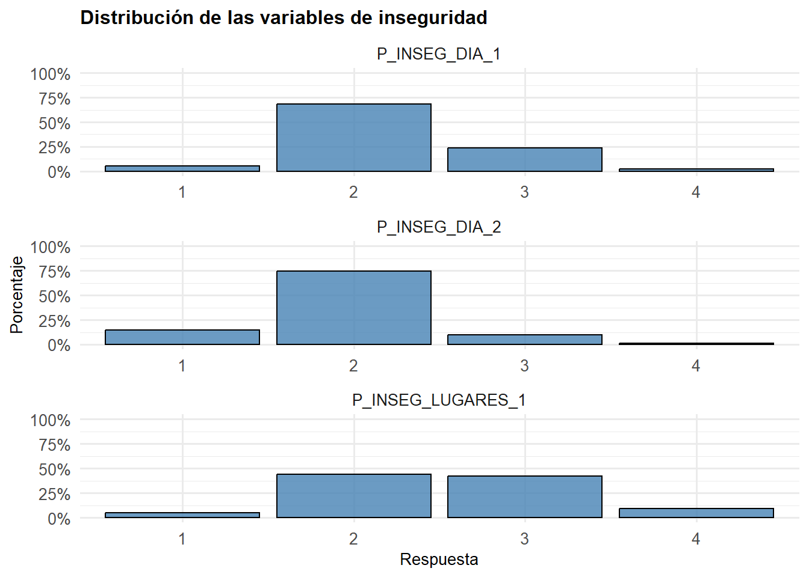
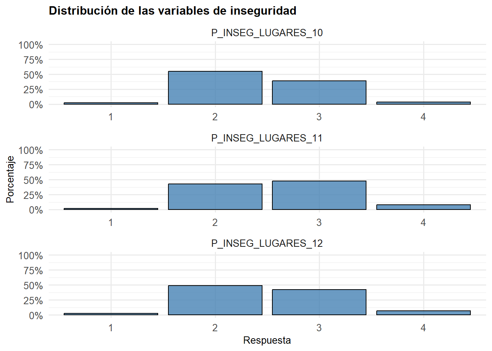
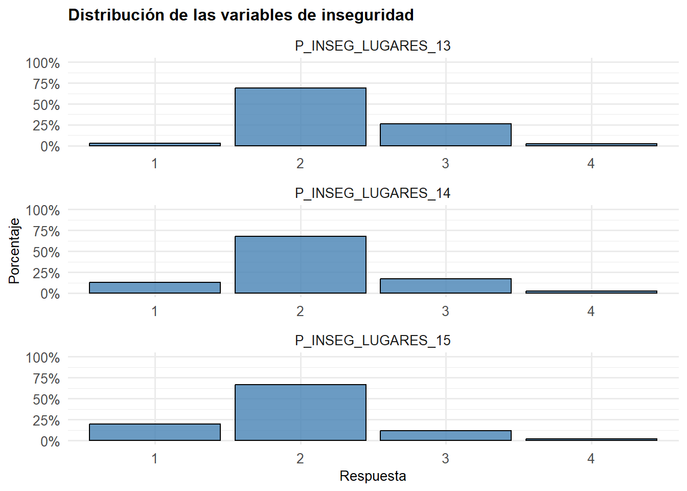
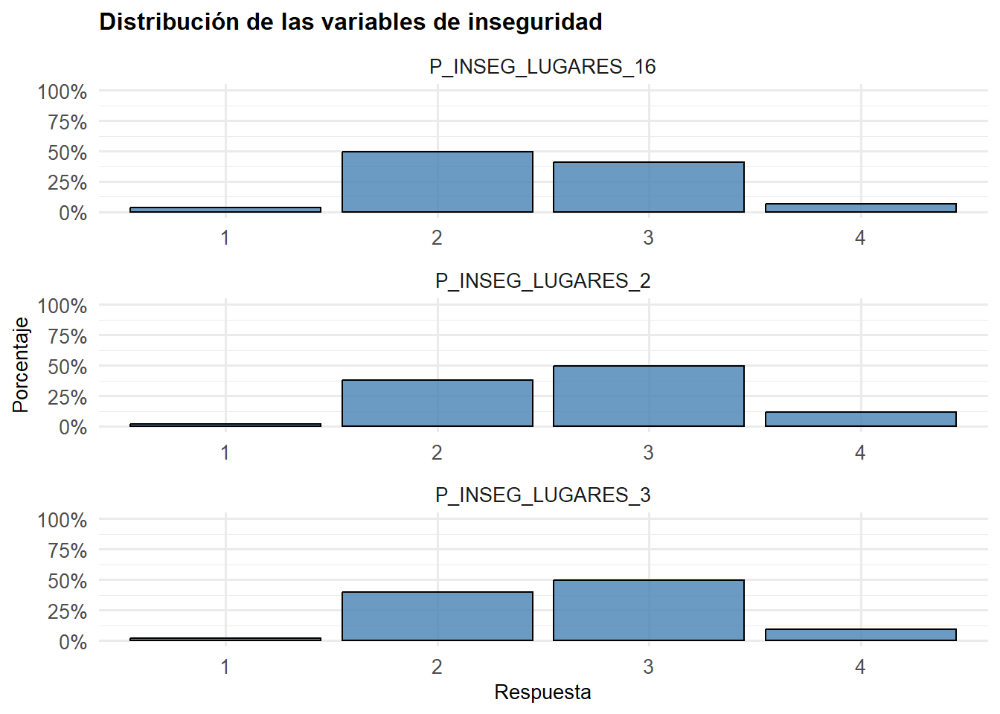
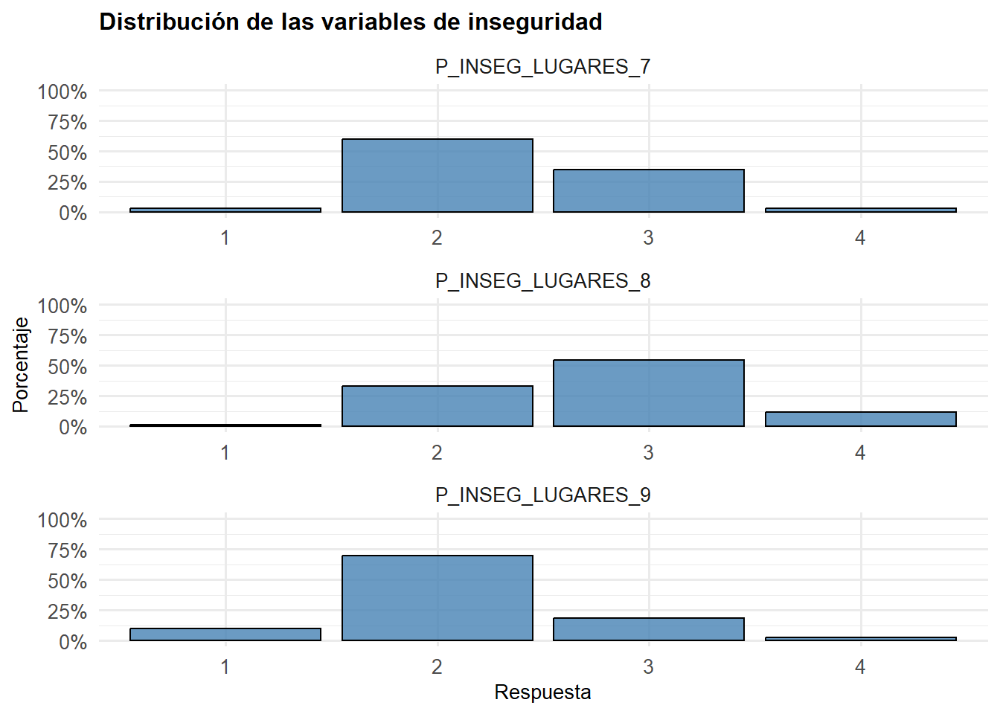
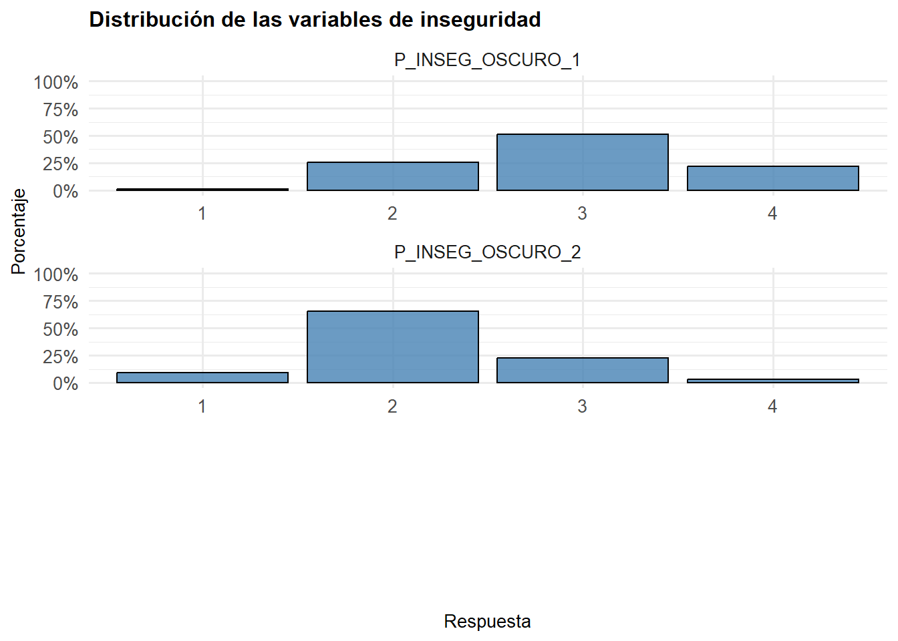
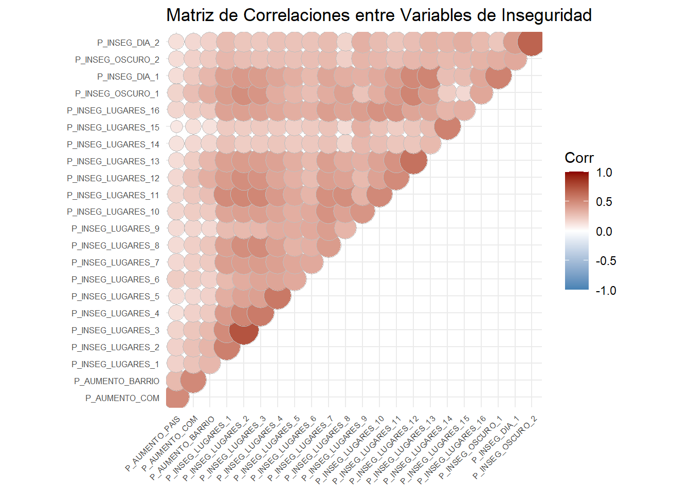
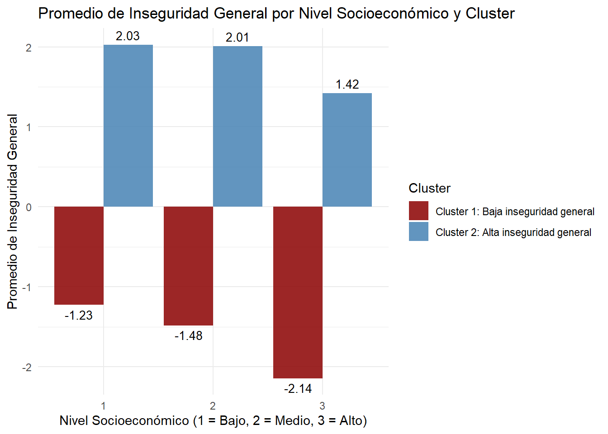
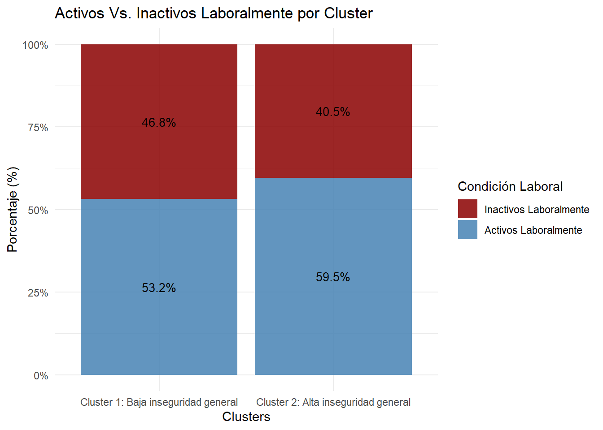

| vars | n | mean | sd | median | trimmed | mad | min | max | range | skew | kurtosis | se | |
|---|---|---|---|---|---|---|---|---|---|---|---|---|---|
| P_AUMENTO_PAIS | 1 | 48262 | 2.879346 | 0.3641719 | 3 | 2.990754 | 0.0000 | 1 | 3 | 2 | -3.1153208 | 9.6161273 | 0.0016577 |
| P_AUMENTO_COM | 2 | 47776 | 2.757410 | 0.4774425 | 3 | 2.849380 | 0.0000 | 1 | 3 | 2 | -1.7920908 | 2.3659362 | 0.0021843 |
| P_AUMENTO_BARRIO | 3 | 47678 | 2.462939 | 0.5994455 | 3 | 2.522861 | 0.0000 | 1 | 3 | 2 | -0.6281963 | -0.5509168 | 0.0027453 |
| P_INSEG_LUGARES_1 | 4 | 29604 | 2.558404 | 0.7280209 | 3 | 2.516382 | 1.4826 | 1 | 4 | 3 | 0.1488447 | -0.3417511 | 0.0042312 |
| P_INSEG_LUGARES_2 | 5 | 39162 | 2.705812 | 0.6846334 | 3 | 2.652091 | 1.4826 | 1 | 4 | 3 | 0.1551784 | -0.4817586 | 0.0034596 |
| P_INSEG_LUGARES_3 | 6 | 37189 | 2.662642 | 0.6631788 | 3 | 2.608140 | 1.4826 | 1 | 4 | 3 | 0.1719235 | -0.4151163 | 0.0034389 |
| P_INSEG_LUGARES_4 | 7 | 36146 | 2.403890 | 0.6221488 | 2 | 2.361885 | 0.0000 | 1 | 4 | 3 | 0.5465588 | 0.0522887 | 0.0032724 |
| P_INSEG_LUGARES_5 | 8 | 26765 | 2.403774 | 0.6706427 | 2 | 2.361836 | 0.0000 | 1 | 4 | 3 | 0.4959584 | 0.0527088 | 0.0040993 |
| P_INSEG_LUGARES_6 | 9 | 20211 | 2.480283 | 0.6970246 | 2 | 2.448822 | 1.4826 | 1 | 4 | 3 | 0.2583631 | -0.2090461 | 0.0049029 |
| P_INSEG_LUGARES_7 | 10 | 37192 | 2.376855 | 0.5938568 | 2 | 2.345029 | 0.0000 | 1 | 4 | 3 | 0.4959349 | 0.0223305 | 0.0030793 |
| P_INSEG_LUGARES_8 | 11 | 35203 | 2.764480 | 0.6648099 | 3 | 2.721585 | 0.0000 | 1 | 4 | 3 | 0.0446421 | -0.3737311 | 0.0035433 |
| P_INSEG_LUGARES_9 | 12 | 23022 | 2.131874 | 0.5927919 | 2 | 2.133294 | 0.0000 | 1 | 4 | 3 | 0.5840197 | 1.2906201 | 0.0039069 |
| P_INSEG_LUGARES_10 | 13 | 44257 | 2.435795 | 0.6001441 | 2 | 2.407066 | 0.0000 | 1 | 4 | 3 | 0.3887108 | -0.2181760 | 0.0028528 |
| P_INSEG_LUGARES_11 | 14 | 34656 | 2.615334 | 0.6527748 | 3 | 2.567265 | 1.4826 | 1 | 4 | 3 | 0.2316110 | -0.3999272 | 0.0035065 |
| P_INSEG_LUGARES_12 | 15 | 41955 | 2.534454 | 0.6568466 | 2 | 2.486549 | 1.4826 | 1 | 4 | 3 | 0.3515384 | -0.3018263 | 0.0032068 |
| P_INSEG_LUGARES_13 | 16 | 46981 | 2.276793 | 0.5504089 | 2 | 2.229400 | 0.0000 | 1 | 4 | 3 | 0.8275917 | 0.8089483 | 0.0025394 |
| P_INSEG_LUGARES_14 | 17 | 28632 | 2.096046 | 0.6298400 | 2 | 2.086091 | 0.0000 | 1 | 4 | 3 | 0.5759080 | 1.1599810 | 0.0037222 |
| P_INSEG_LUGARES_15 | 18 | 6280 | 1.954299 | 0.6184873 | 2 | 1.921776 | 0.0000 | 1 | 4 | 3 | 0.4569360 | 1.1145425 | 0.0078046 |
| P_INSEG_LUGARES_16 | 19 | 39218 | 2.505278 | 0.6708918 | 2 | 2.466312 | 1.4826 | 1 | 4 | 3 | 0.3009707 | -0.2318630 | 0.0033877 |
| P_INSEG_OSCURO_1 | 20 | 43800 | 2.934452 | 0.7262737 | 3 | 2.936073 | 0.0000 | 1 | 4 | 3 | -0.1252515 | -0.5615778 | 0.0034703 |
| P_INSEG_DIA_1 | 21 | 47593 | 2.232660 | 0.5751397 | 2 | 2.203362 | 0.0000 | 1 | 4 | 3 | 0.6701075 | 0.9526756 | 0.0026363 |
| P_INSEG_OSCURO_2 | 22 | 48350 | 2.196174 | 0.6262557 | 2 | 2.195424 | 0.0000 | 1 | 4 | 3 | 0.5254746 | 0.7697802 | 0.0028481 |
| P_INSEG_DIA_2 | 23 | 48417 | 1.974121 | 0.5355538 | 2 | 1.954202 | 0.0000 | 1 | 4 | 3 | 0.3969210 | 2.1269793 | 0.0024339 |
Proyecto-Seguridad: Análisis de Clusters en torno a la Percepción de Inseguridad en Chile
Introducción
En el presente trabajo, se analizarán diversas variables incluidas en la encuesta ENUSC 2023, con la finalidad de observar la manera en que los tipos de percepción de inseguridad capturados en base al análisis, se relacionan con ciertas características de la población, como la edad, nivel educacional, sexo, nivel socioeconómico, entre otros factores. De tal manera, a través de este trabajo se buscarán agrupar los diversos tipos de inseguridad declarados por las personas entrevistadas, con el objetivo de caracterizar sociodemográficamente las diversas variables de este tipo, que determinan los perfiles de inseguridad existentes en la sociedad chilena.
Análisis Descriptivo
En base a los resultados arrojados por el gráfico, y en relación a las variables de percepción de aumento de delincuencia (“P_AUMENTO_PAIS”, “P_AUMENTO_COM”, “P_AUMENTO_BARRIO”), podemos indicar:
“P_AUMENTO_PAIS” tiene una media de 2,879, lo que indica una percepción general de aumento en el nivel de delincuencia durante los últimos 12 meses. “P_AUMENTO_COM” y “P_AUMENTO_BARRIO” tienen medias menores (2,756 y 2,461), indicando que la percepción de aumento de la delincuencia es menor a nivel local.En base a la información arrojada, podemos establecer que las personas tienden a considerar a su unidad territorial próxima mayormente segura, mientras que a aquella que se encuentra más lejana (comuna y país), se observa mayormente afectada por el fenómeno delictivo.






En base a los histogramas y estadísticos descriptivos, las variables que reflejan mayor inseguridad son:
“P_INSEG_OSCURO_1” (Media: 2,932): Representa la percepción de inseguridad al caminar solo/a por el barrio durante la noche. Su media más alta indica que las personas se sienten significativamente menos seguras en esta situación. Este resultado podría estar relacionado con factores como la falta de iluminación, la presencia limitada de vigilancia y el miedo al crimen en horarios nocturnos.
“P_INSEG_LUGARES_8” (Media: 2,762): Representa la percepción de inseguridad en terminales de buses o ferrocarriles. La alta percepción de inseguridad puede estar asociada a la concurrencia de personas desconocidas, áreas mal vigiladas o actividades delictivas comunes en estos lugares.
“P_INSEG_LUGARES_2” (Media: 2,703): Evalúa la percepción de seguridad al esperar transporte público. La inseguridad en esta situación podría estar influenciada por tiempos de espera prolongados, áreas poco iluminadas y la exposición al robo o acoso mientras se espera.
Variables que reflejan menor inseguridad:
“P_INSEG_DIA_2” (Media: 1,975): Representa la percepción de inseguridad al estar solo/a en casa durante el día. La media más baja indica que las personas se sienten mayoritariamente seguras en esta situación. Esto puede atribuirse a que estar en casa durante el día se percibe como una situación de menor riesgo, con menos probabilidades de encuentros con desconocidos o eventos delictivos.
“P_INSEG_LUGARES_15” (Media: 1,96): Evalúa la percepción de seguridad en el lugar de estudio. Este bajo nivel de inseguridad sugiere que los lugares de estudio están asociados a entornos relativamente controlados y protegidos, con supervisión activa y menor riesgo de incidentes.
“P_INSEG_LUGARES_14” (Media: 2,097): Representa la percepción de seguridad en el lugar de trabajo. Aunque ligeramente más alta que las anteriores, sigue indicando un nivel bajo de inseguridad percibida. Los lugares de trabajo suelen estar bien iluminados, vigilados y organizados, lo que contribuye a una mayor sensación de seguridad.
Matriz de correlación variables inseguridad
[1] 0.1037133 1.0000000
Podemos observar, en base a la matriz de correlaciones, que todas las variables relativas a la percepción de inseguridad, tienen una relación positiva, con un valor R mínimo de 0,1. En general, se observan valores medios y medios altos de correlación, lo que tiene sentido, si se considera que todo el set de preguntas incluidas en esta matriz de correlación, se deriva de la percepción de inseguridad. Más allá de lo anterior, hay zonas del gráfico claramente más coloridas y otras que indican menores niveles de correlación, punto a considerar para un posterior análisis de reducción de dimensionalidad.
| vars | n | mean | sd | median | trimmed | mad | min | max | range | skew | kurtosis | se | |
|---|---|---|---|---|---|---|---|---|---|---|---|---|---|
| rph_sexo | 1 | 48552 | 1.5597298 | 0.4964246 | 2 | 1.5746614 | 0.0000 | 1 | 2 | 1 | -0.2406349 | -1.9421349 | 0.0022529 |
| rph_idgen | 2 | 48372 | 1.5608617 | 0.4968700 | 2 | 1.5757145 | 0.0000 | 1 | 3 | 2 | -0.2381841 | -1.9243659 | 0.0022592 |
| rph_pertenencia_indigena | 3 | 48552 | 0.0906039 | 0.2870479 | 0 | 0.0000000 | 0.0000 | 0 | 1 | 1 | 2.8523993 | 6.1363083 | 0.0013027 |
| rph_nacionalidad | 4 | 48552 | 1.0613157 | 0.2399110 | 1 | 1.0000000 | 0.0000 | 1 | 2 | 1 | 3.6569838 | 11.3737647 | 0.0010888 |
| rph_nivel | 5 | 48552 | 2.1750700 | 0.7294789 | 2 | 2.2281551 | 1.4826 | 0 | 3 | 3 | -0.3980339 | -0.6634254 | 0.0033106 |
| rph_situacion_laboral_a | 6 | 48552 | 0.5565167 | 0.4968007 | 1 | 0.5706452 | 0.0000 | 0 | 1 | 1 | -0.2275180 | -1.9482757 | 0.0022546 |
| rph_edad | 7 | 48552 | 4.2613487 | 1.8156855 | 4 | 4.2747026 | 2.9652 | 1 | 7 | 6 | -0.0353487 | -1.1228258 | 0.0082402 |
| rph_nse | 8 | 48552 | 1.6642775 | 0.7048051 | 2 | 1.5803512 | 1.4826 | 1 | 3 | 2 | 0.5781493 | -0.8414490 | 0.0031986 |
Análisis de las variables sociodemográficas:
“rph_sexo”:
Rango: 1 (Hombre) a 2 (Mujer). Distribución: La mediana (2,000) y la media (1,55) indican una ligera mayoría de mujeres en la muestra.
“rph_idgen”:
Rango: 1 (Masculino) a 3 (Trans u otro). Distribución: La mediana (2,0) y la media (1,55) reflejan que la mayoría de los encuestados se identifica como masculino o femenino, mientras que una pequeña proporción se identifica como “Trans u otro”.
“rph_pertenencia_indigena”: Rango: 0 (No pertenece) a 1 (Pertenece). Distribución: La media (0,09) indica que menos del 10% de los encuestados pertenece a un pueblo indígena, que se condice con resultados arrojados por instrumentos como CENSO 0217 y encuestas de opinión pública, las que arrojan que alrededor del 10% de nuestra población se identifica como perteneciente a un pueblo indígena..
“rph_nacionalidad”: Rango: 1 (Chilena) a 2 (Chilena y/u otra). Distribución: La mediana (1,0) y la media (1,06) reflejan que la mayoría de los encuestados se identifica exclusivamente como chilenos.
“rph_nivel” (Nivel educacional):
Rango: 0 (Nunca asistió) a 3 (Educación superior). Distribución: La mediana (2,0) y la media (2,1) indican que la mayoría de los encuestados tiene educación secundaria o superior, con un número considerable alcanzando estudios superiores.
“rph_situacion_laboral_a” (Situación laboral actual):
Rango: 0 (No) a 1 (Sí). Distribución: La media (0,56) indica que aproximadamente el 56% de los encuestados estaba trabajando al momento de contestar la encuesta.
“rph_edad”:
Rango: 1 (0 a 14 años) a 7 (70 años o más). Distribución: La media (4,26) y la mediana (4,0) sugieren que la población está principalmente concentrada en rangos de edad entre 30 y 49 años. Debemos considerar que no hay personas incluidas en la categoría 1 de “rph_edad”, esto dado que al filtrar la base de datos a través de la variable “Kish”, sólo estamos considerando la información de personas informantes, quienes no deben tener menos de 15 años para poder contestar la encuesta ENUSC, según lo indica el documento “Manual de Usuario de la Base de Datos ENUSC 2023”, en su página 14.
“rph_nse” (Nivel socioeconómico):
Rango: 1 (NSE bajo) a 3 (NSE alto). Distribución: La mediana (2,0) y la media (1,66) reflejan que la mayoría de los encuestados pertenece a niveles socioeconómicos bajos o medios.
De tal manera, las variables sociodemográficas muestran una población diversa, con una mayoría femenina, concentrada entre los 30 y 49 años. La mayoría de los encuestados tiene educación secundaria o superior, pertenece a niveles socioeconómicos bajos o medios, y está laboralmente activo.
En base a los estadísticos descriptivos y la visualización gráfica, podemos establecer que tanto la percepción de inseguridad, como la percepción de aumento de la delincuencia se encuentran, en términos generales, en un rango medio-alto de la distribución. De tal manera, la mayor parte de los entrevistados tiene una evaluación negativa respecto a la condición de seguridad del país en la actualidad.
Matriz de correlación variables sociodemográficas e inseguridad
Como podemos observar, los coeficientes de correlación entre las variables sociodemográficas y los índices de inseguridad son débiles. Esto podría deberse a que la sensación de inseguridad podría entenderse como un fenómeno transversal en la población, lo que sugiere que es necesario identificar perfiles sociodemográficos específicos y analizar cómo se relacionan con la percepción de inseguridad a nivel general. Más allá de lo anterior, los resultados permiten identificar que variables como el sexo, la edad y el nivel socioeconómico podrían ser factores relevantes en este fenómeno. De manera más limitada, la nacionalidad y la situación laboral también parecen tener cierta influencia en las percepciones de inseguridad y delincuencia en el territorio.
Esta matriz de correlación refuerza en cierta medida nuestras observaciones. Parece que las variables sociodemográficas tienen comportamientos distintos en relación con la percepción de inseguridad, lo que sugiere que la especificidad de estas variables no se refleja completamente en su generalidad.
Asimismo, las correlaciones positivas observadas en las variables de sexo y edad, en contraste con las negativas asociadas al nivel socioeconómico y educativo, indican patrones de comportamiento diversos. Esto resalta la necesidad de diferenciar estos comportamientos a través de perfiles sociodemográficos más específicos que los capturen de manera adecuada. Asimismo, una mayor especificidad en dichos perfiles debería hacer las correlaciones en torno a la inseguridad más claras.
##T-test
Observando diferencias intra-grupales en variables sociodemográficas, según percepción de inseguridad utilizando índices construidos.
| Estadístico.t | Valor.p | Grados.de.libertad | Media.del.grupo.1 | Media.del.grupo.2 | Intervalo.de.confianza..Inf. | Intervalo.de.confianza..Sup. | |
|---|---|---|---|---|---|---|---|
| t | -39.36351 | 0 | 45910 | 2.337748 | 2.481456 | -0.1508634 | -0.1365522 |
| Estadístico.t | Valor.p | Grados.de.libertad | Media.del.grupo.1 | Media.del.grupo.2 | Intervalo.de.confianza..Inf. | Intervalo.de.confianza..Sup. | |
|---|---|---|---|---|---|---|---|
| t | -19.21143 | 0 | 45910 | 2.337748 | 2.481456 | -0.1508634 | -0.1365522 |
En base a las pruebas T para verificar diferencias entre grupos, podemos observar que las mujeres reportan un nivel promedio de inseguridad significativamente mayor que los hombres. Aunque la diferencia es pequeña, es estadísticamente significativa debido al gran tamaño muestral.
Análogamente, las mujeres tienen un promedio significativamente más alto en el índice de percepción de delincuencia que los hombres. De igual forma, aunque esa diferencia es pequeña, sigue siendo estadísticamente significativa.
Anova
| Df | Sum Sq | Mean Sq | F value | Pr(>F) | |
|---|---|---|---|---|---|
| factor(rph_nse) | 2 | 77.64888 | 38.8244385 | 238.3817 | 0 |
| Residuals | 48461 | 7892.68313 | 0.1628667 | NA | NA |
| Df | Sum Sq | Mean Sq | F value | Pr(>F) | |
|---|---|---|---|---|---|
| factor(rph_nse) | 2 | 28.00639 | 14.0031971 | 95.57534 | 0 |
| Residuals | 48461 | 7100.25119 | 0.1465147 | NA | NA |
| diff | lwr | upr | p adj | |
|---|---|---|---|---|
| 2-1 | -0.0164342 | -0.0257249 | -0.0071435 | 0.0001004 |
| 3-1 | -0.1217930 | -0.1349832 | -0.1086028 | 0.0000000 |
| 3-2 | -0.1053588 | -0.1188557 | -0.0918619 | 0.0000000 |
| diff | lwr | upr | p adj | |
|---|---|---|---|---|
| 2-1 | -0.0019419 | -0.0107539 | 0.0068701 | 0.8633011 |
| 3-1 | -0.0707803 | -0.0832908 | -0.0582698 | 0.0000000 |
| 3-2 | -0.0688384 | -0.0816398 | -0.0560370 | 0.0000000 |
Respecto a las diferencias en Índice de inseguridad según NSE:
En base a los tests ANOVA, es posible observar diferencias estadísticamente significativas entre grupos de nivel socioeconómico, según su percepción de inseguridad y percepción de variación de la delincuencia. De tal manera, el NSE de cada persona influye de manera relevante en tales percepciones. En base a los resultados Tukey, podemos aseverar que a medida que aumenta el nivel socioeconómico, la percepción de inseguridad disminuye de manera consistente. Esto podría deberse a mejores condiciones de vida, entornos más protegidos o menor exposición a riesgos en los grupos con NSE alto.
Los resultados indican que las personas con un NSE bajo perciben mayor inseguridad, seguido de las de NSE medio, con el NSE alto mostrando significativamente menor percepción de inseguridad.
Respecto a las diferencias en Índice de percepción de delincuencia según NSE:
Aunque la percepción de aumento de delincuencia es ligeramente mayor en los NSE bajos y medios, las diferencias entre estos niveles no son significativas. Sin embargo, el NSE alto muestra una percepción significativamente menor.
En resumen y, en base a los tests ANOVA, es posible observar diferencias estadísticamente significativas entre grupos de nivel socioeconómico, según su percepción de inseguridad y percepción de variación de la delincuencia. Así, el NSE de cada persona influye de manera relevante en tales percepciones. En base a los resultados Tukey, podemos aseverar que a medida que aumenta el nivel socioeconómico, la percepción de inseguridad disminuye. Esto podría deberse a mejores condiciones de vida, entornos más protegidos o menor exposición a riesgos en los grupos con NSE alto.
En términos de magnitud, las mayores diferencias significativas se encuentran entre personas pertenecientes a NSE Alto, respecto a los grupos que se ubican en NSE Medio y NSE Bajo.
| Df | Sum Sq | Mean Sq | F value | Pr(>F) | |
|---|---|---|---|---|---|
| factor(rph_nivel) | 3 | 21.44736 | 7.1491213 | 43.58428 | 0 |
| Residuals | 48460 | 7948.88464 | 0.1640298 | NA | NA |
| Df | Sum Sq | Mean Sq | F value | Pr(>F) | |
|---|---|---|---|---|---|
| factor(rph_nivel) | 3 | 4.951451 | 1.6504838 | 11.22828 | 2e-07 |
| Residuals | 48460 | 7123.306135 | 0.1469935 | NA | NA |
| diff | lwr | upr | p adj | |
|---|---|---|---|---|
| 2-1 | -0.0164342 | -0.0257249 | -0.0071435 | 0.0001004 |
| 3-1 | -0.1217930 | -0.1349832 | -0.1086028 | 0.0000000 |
| 3-2 | -0.1053588 | -0.1188557 | -0.0918619 | 0.0000000 |
| diff | lwr | upr | p adj | |
|---|---|---|---|---|
| 1-0 | 0.0125580 | -0.0405374 | 0.0656533 | 0.9296980 |
| 2-0 | 0.0247731 | -0.0276283 | 0.0771745 | 0.6175805 |
| 3-0 | 0.0025695 | -0.0499446 | 0.0550836 | 0.9992908 |
| 2-1 | 0.0122151 | -0.0004462 | 0.0248765 | 0.0632898 |
| 3-1 | -0.0099885 | -0.0231084 | 0.0031314 | 0.2049479 |
| 3-2 | -0.0222036 | -0.0321497 | -0.0122575 | 0.0000001 |
| Frecuencia.Var1 | Frecuencia.Freq | Proporción.Var1 | Proporción.Freq |
|---|---|---|---|
| 0 | 359 | 0 | 0.740756 |
| 1 | 8309 | 1 | 17.144685 |
| 2 | 22276 | 2 | 45.964014 |
| 3 | 17520 | 3 | 36.150545 |
Respecto a las diferencias en Índice de inseguridad según Nivel Educacional:
Las personas con educación secundaria tienen la percepción más alta de inseguridad, seguidas por quienes poseen educación básica y superior. Esto puede reflejar una exposición diferente a entornos sociales y económicos según el nivel educativo. Las personas con educación superior tienden a reportar menor percepción de inseguridad, lo que podría estar relacionado con mayor acceso a recursos, mejor calidad de vida o diferentes entornos habitacionales.
Más allá de lo anterior, en este caso, no es posible establecer que a medida que aumenta el nivel educacional, disminuye la percepción de inseguridad. Esto dado que las personas con educación secundaria muestran mayor percepción de este fenómeno, al compararlas con las personas que poseen educación básica o que no poseen estudios formales.
En relación a las diferencias en Índice de percepción de delincuencia según Nivel Educacional:
Las diferencias son menos marcadas, pero el nivel educacional también influye. Las personas con educación secundaria tienen una percepción ligeramente mayor de aumento en delincuencia, mientras que las personas con educación superior reportan valores más bajos.
Es importante destacar que la tendencia respecto a que existe menor inseguridad en personas que niveles educativos altos no se cumple al analizar a las personas que declaran nunca haber asistido, dado que, prácticamente, no se encontraron diferencias significativas entre este y los demás grupos. Es probable que este fenómeno se deba a la baja proporción de personas que no tienen educación formal en Chile, con lo que es muy difícil que la muestra de la encuesta analizada sea capaz de capturar, de manera representativa, la realidad social de las personas 365 personas de la encuesta (menos de un 1% de la muestra), que se encuentran en tal condición.
Análisis de Componentes Principales (PCA)
| PC1 | PC2 | PC3 | PC4 | PC5 | PC6 | PC7 | PC8 | PC9 | PC10 | PC11 | PC12 | PC13 | PC14 | PC15 | PC16 | PC17 | PC18 | PC19 | PC20 | |
|---|---|---|---|---|---|---|---|---|---|---|---|---|---|---|---|---|---|---|---|---|
| Standard deviation | 2.548693 | 1.207414 | 1.08032 | 1.020695 | 0.9757295 | 0.9211428 | 0.9175003 | 0.894584 | 0.8744588 | 0.8216779 | 0.8150634 | 0.8050118 | 0.7698587 | 0.7533629 | 0.7150804 | 0.7053284 | 0.6907073 | 0.6304276 | 0.550323 | 0.544174 |
| Proportion of Variance | 0.324790 | 0.072890 | 0.05835 | 0.052090 | 0.0476000 | 0.0424300 | 0.0420900 | 0.040010 | 0.0382300 | 0.0337600 | 0.0332200 | 0.0324000 | 0.0296300 | 0.0283800 | 0.0255700 | 0.0248700 | 0.0238500 | 0.0198700 | 0.015140 | 0.014810 |
| Cumulative Proportion | 0.324790 | 0.397680 | 0.45604 | 0.508130 | 0.5557300 | 0.5981600 | 0.6402500 | 0.680260 | 0.7185000 | 0.7522500 | 0.7854700 | 0.8178700 | 0.8475100 | 0.8758800 | 0.9014500 | 0.9263300 | 0.9501800 | 0.9700500 | 0.985190 | 1.000000 |
| PC1 | PC2 | PC3 | PC4 | PC5 | PC6 | PC7 | PC8 | PC9 | PC10 | PC11 | PC12 | PC13 | PC14 | PC15 | PC16 | PC17 | PC18 | PC19 | PC20 | |
|---|---|---|---|---|---|---|---|---|---|---|---|---|---|---|---|---|---|---|---|---|
| P_INSEG_LUGARES_1 | 0.2157964 | 0.0536503 | -0.1125831 | -0.2020741 | -0.0058772 | 0.3858033 | -0.1681363 | 0.1422785 | -0.5970927 | 0.3213639 | 0.1578958 | 0.1272512 | -0.0121491 | 0.1445154 | 0.2040509 | -0.3634357 | -0.0216085 | -0.0182185 | 0.0103875 | 0.0554366 |
| P_INSEG_LUGARES_2 | 0.2661339 | 0.2929062 | -0.0708090 | 0.2822242 | 0.0723390 | 0.2040696 | -0.0785814 | -0.1948696 | 0.1470332 | 0.1650375 | 0.1186509 | -0.1586913 | -0.0799634 | 0.0125605 | -0.1836194 | -0.0488112 | -0.2124675 | 0.0202985 | -0.0084565 | -0.7009238 |
| P_INSEG_LUGARES_3 | 0.2626405 | 0.3044206 | -0.0112374 | 0.3054837 | 0.0732640 | 0.1933047 | -0.0675617 | -0.2086390 | 0.1746109 | 0.1455454 | 0.0799172 | -0.2023492 | -0.0533093 | 0.0060811 | -0.1335837 | 0.0393761 | -0.1818948 | 0.0438422 | 0.0047487 | 0.7055237 |
| P_INSEG_LUGARES_4 | 0.2389838 | 0.1922286 | 0.2035953 | 0.3603096 | -0.0314683 | 0.1235673 | 0.1120666 | 0.2522082 | 0.0574146 | -0.0290055 | 0.0149639 | -0.0838093 | 0.1068023 | 0.0468459 | 0.4287584 | 0.1555986 | 0.6336184 | -0.0675970 | 0.0015831 | -0.0561967 |
| P_INSEG_LUGARES_5 | 0.1943993 | 0.0880904 | 0.3365147 | 0.2882916 | -0.0820628 | -0.0814421 | 0.2685393 | 0.5528972 | -0.1778595 | -0.2071972 | -0.0685154 | 0.2369357 | -0.0319771 | -0.1128741 | -0.2634831 | -0.1362328 | -0.3591930 | 0.0211085 | -0.0090741 | 0.0151054 |
| P_INSEG_LUGARES_6 | 0.1568178 | 0.0196456 | 0.4111808 | 0.1095060 | -0.1149171 | -0.3659977 | 0.0425831 | -0.5917669 | -0.5165988 | -0.1209950 | 0.0759197 | -0.0508251 | 0.0341289 | 0.0135405 | 0.0113451 | 0.0315282 | 0.0417511 | -0.0098613 | -0.0110103 | -0.0224895 |
| P_INSEG_LUGARES_7 | 0.2400279 | 0.0208745 | 0.1481601 | -0.2439320 | -0.0471443 | -0.0641888 | -0.1000183 | 0.0925939 | 0.0024076 | 0.0043514 | -0.5303705 | -0.2704079 | -0.6230110 | 0.2964573 | -0.0030712 | 0.0566700 | 0.0340952 | 0.0200244 | -0.0102318 | -0.0148251 |
| P_INSEG_LUGARES_8 | 0.2217692 | 0.2379833 | 0.0568843 | -0.1084432 | -0.0173396 | 0.0176973 | -0.2122945 | -0.2119610 | 0.2157050 | -0.0586124 | -0.5226611 | 0.5367062 | 0.3702990 | 0.0458647 | 0.1401995 | -0.1126921 | -0.0689937 | -0.0134420 | 0.0281713 | -0.0083222 |
| P_INSEG_LUGARES_9 | 0.1768285 | -0.1515539 | 0.4270370 | -0.2238901 | -0.0857104 | -0.2479846 | -0.0217320 | 0.0924940 | 0.3067728 | 0.6511951 | 0.2623207 | 0.1514827 | 0.0475953 | 0.0455320 | -0.1235219 | 0.0417379 | 0.0596891 | 0.0126483 | 0.0205027 | 0.0008488 |
| P_INSEG_LUGARES_10 | 0.2469247 | -0.0056502 | 0.1489242 | -0.2884189 | -0.0609072 | -0.0253564 | -0.1727670 | 0.0301930 | 0.1734442 | -0.2153234 | 0.0880219 | -0.3263835 | 0.0020451 | -0.6528967 | 0.2390083 | -0.3479214 | -0.0551911 | -0.0101415 | -0.0139390 | -0.0017093 |
| P_INSEG_LUGARES_11 | 0.2509760 | 0.1256376 | -0.0637152 | -0.3275802 | -0.0032745 | 0.1453532 | -0.1613713 | 0.1349023 | -0.2419065 | -0.0656050 | -0.0035995 | -0.0404540 | 0.2173356 | -0.2423175 | -0.3262067 | 0.6798110 | 0.0684578 | 0.0147142 | 0.0040020 | -0.0241377 |
| P_INSEG_LUGARES_12 | 0.2618466 | 0.0415259 | -0.3128227 | -0.0848598 | 0.0842756 | -0.2845045 | 0.2090896 | 0.0376968 | -0.0059859 | 0.0107496 | -0.0662910 | -0.1661336 | 0.2002458 | 0.1005071 | -0.3370898 | -0.2802359 | 0.2200098 | -0.6059584 | 0.0074020 | 0.0362687 |
| P_INSEG_LUGARES_13 | 0.2641170 | -0.0474852 | -0.2408565 | -0.0889692 | 0.0620645 | -0.2612544 | 0.2696155 | 0.0871146 | -0.0170756 | 0.0302529 | -0.0641958 | -0.2827782 | 0.3596706 | 0.2134343 | 0.1117013 | -0.0625461 | -0.0869310 | 0.6507506 | -0.0426690 | -0.0148620 |
| P_INSEG_LUGARES_14 | 0.1387053 | -0.2714354 | 0.1336111 | -0.1864405 | 0.0346138 | 0.5132506 | 0.6905290 | -0.2775966 | 0.0745843 | 0.0105107 | -0.1188999 | 0.0535416 | -0.0261929 | -0.0998551 | -0.0339695 | 0.0165590 | 0.0137940 | -0.0281409 | 0.0128444 | -0.0069037 |
| P_INSEG_LUGARES_15 | 0.0689426 | -0.1968650 | 0.1774966 | 0.0494589 | 0.9455430 | -0.0400391 | -0.1267231 | 0.0265573 | -0.0585804 | -0.0324796 | -0.0289275 | 0.0472584 | -0.0126286 | -0.0372642 | 0.0068668 | -0.0013634 | 0.0272799 | 0.0122713 | 0.0062295 | -0.0058077 |
| P_INSEG_LUGARES_16 | 0.2348098 | -0.0446012 | 0.1075544 | -0.2393203 | -0.0145288 | 0.1064062 | -0.0966587 | -0.0026392 | 0.2242272 | -0.5402522 | 0.4870978 | 0.0990046 | -0.0118925 | 0.5047918 | 0.0123224 | 0.0056676 | -0.0702924 | -0.0561648 | -0.0240324 | 0.0109610 |
| P_INSEG_OSCURO_1 | 0.2483277 | 0.0443373 | -0.3442051 | 0.0228917 | 0.0159855 | -0.1761807 | 0.0748215 | -0.0994465 | 0.0252169 | -0.0557077 | 0.1645211 | 0.4643948 | -0.4346487 | -0.2417019 | -0.1237060 | -0.0561232 | 0.3260346 | 0.2709853 | -0.2781154 | 0.0352469 |
| P_INSEG_DIA_1 | 0.2655338 | -0.1259464 | -0.2836873 | 0.0672073 | 0.0159770 | -0.2354978 | 0.1406690 | 0.0069812 | -0.0024924 | 0.0821052 | 0.0828915 | 0.1327323 | -0.1630365 | -0.0722142 | 0.4995340 | 0.3380373 | -0.3897162 | -0.2773406 | 0.3120504 | -0.0086877 |
| P_INSEG_OSCURO_2 | 0.2070312 | -0.4992377 | -0.0786015 | 0.2588722 | -0.1645681 | 0.0988576 | -0.2640282 | -0.0287870 | 0.0079567 | -0.0813742 | -0.0678442 | 0.0236476 | 0.0146989 | -0.0259264 | -0.2450668 | -0.1072158 | 0.1901195 | 0.1602102 | 0.6173904 | 0.0063149 |
| P_INSEG_DIA_2 | 0.1990436 | -0.5405856 | -0.0520343 | 0.2602540 | -0.1443467 | 0.0822719 | -0.2221059 | 0.0066644 | 0.0041364 | 0.0343521 | -0.1165620 | -0.0578284 | 0.1268434 | 0.0246880 | 0.0510223 | 0.0877785 | -0.1252697 | -0.1427714 | -0.6629568 | 0.0024683 |
Como podemos observar, los resultados muestran que los primeros 4 componentes explican el 50.8% de la varianza total:
PC1: 32.52% - Captura un patrón generalizado de percepción de inseguridad. PC2: 7.28% - Refleja inseguridades específicas en lugares de la vida mayormente privada, como las viviendas de las personas y sus respectivos lugares de trabajo. PC3: 5.83% - Representa variaciones relacionadas con percepción de temor por permanencia en terminales de transporte público. PC4: 5.19% - Representa variaciones relacionadas con temor en traslados de transporte público
Una vez que tenemos indicios de posibles componentes a retener, creamos un Screen Plot para visualizar la varianza explicada por cada componente principal.
| PC | Eigenvalue |
|---|---|
| PC1 | 6.495837 |
| PC2 | 1.457848 |
| PC3 | 1.167090 |
| PC4 | 1.041818 |
| PC1 | PC2 | PC3 | PC4 | PC5 | PC6 | PC7 | PC8 | PC9 | PC10 | PC11 | PC12 | PC13 | PC14 | PC15 | PC16 | PC17 | PC18 | PC19 | PC20 | |
|---|---|---|---|---|---|---|---|---|---|---|---|---|---|---|---|---|---|---|---|---|
| P_INSEG_LUGARES_1 | 0.216 | 0.054 | -0.113 | -0.202 | -0.006 | 0.386 | -0.168 | 0.142 | -0.597 | 0.321 | 0.158 | 0.127 | -0.012 | 0.145 | 0.204 | -0.363 | -0.022 | -0.018 | 0.010 | 0.055 |
| P_INSEG_LUGARES_2 | 0.266 | 0.293 | -0.071 | 0.282 | 0.072 | 0.204 | -0.079 | -0.195 | 0.147 | 0.165 | 0.119 | -0.159 | -0.080 | 0.013 | -0.184 | -0.049 | -0.212 | 0.020 | -0.008 | -0.701 |
| P_INSEG_LUGARES_3 | 0.263 | 0.304 | -0.011 | 0.305 | 0.073 | 0.193 | -0.068 | -0.209 | 0.175 | 0.146 | 0.080 | -0.202 | -0.053 | 0.006 | -0.134 | 0.039 | -0.182 | 0.044 | 0.005 | 0.706 |
| P_INSEG_LUGARES_4 | 0.239 | 0.192 | 0.204 | 0.360 | -0.031 | 0.124 | 0.112 | 0.252 | 0.057 | -0.029 | 0.015 | -0.084 | 0.107 | 0.047 | 0.429 | 0.156 | 0.634 | -0.068 | 0.002 | -0.056 |
| P_INSEG_LUGARES_5 | 0.194 | 0.088 | 0.337 | 0.288 | -0.082 | -0.081 | 0.269 | 0.553 | -0.178 | -0.207 | -0.069 | 0.237 | -0.032 | -0.113 | -0.263 | -0.136 | -0.359 | 0.021 | -0.009 | 0.015 |
| P_INSEG_LUGARES_6 | 0.157 | 0.020 | 0.411 | 0.110 | -0.115 | -0.366 | 0.043 | -0.592 | -0.517 | -0.121 | 0.076 | -0.051 | 0.034 | 0.014 | 0.011 | 0.032 | 0.042 | -0.010 | -0.011 | -0.022 |
| P_INSEG_LUGARES_7 | 0.240 | 0.021 | 0.148 | -0.244 | -0.047 | -0.064 | -0.100 | 0.093 | 0.002 | 0.004 | -0.530 | -0.270 | -0.623 | 0.296 | -0.003 | 0.057 | 0.034 | 0.020 | -0.010 | -0.015 |
| P_INSEG_LUGARES_8 | 0.222 | 0.238 | 0.057 | -0.108 | -0.017 | 0.018 | -0.212 | -0.212 | 0.216 | -0.059 | -0.523 | 0.537 | 0.370 | 0.046 | 0.140 | -0.113 | -0.069 | -0.013 | 0.028 | -0.008 |
| P_INSEG_LUGARES_9 | 0.177 | -0.152 | 0.427 | -0.224 | -0.086 | -0.248 | -0.022 | 0.092 | 0.307 | 0.651 | 0.262 | 0.151 | 0.048 | 0.046 | -0.124 | 0.042 | 0.060 | 0.013 | 0.021 | 0.001 |
| P_INSEG_LUGARES_10 | 0.247 | -0.006 | 0.149 | -0.288 | -0.061 | -0.025 | -0.173 | 0.030 | 0.173 | -0.215 | 0.088 | -0.326 | 0.002 | -0.653 | 0.239 | -0.348 | -0.055 | -0.010 | -0.014 | -0.002 |
| P_INSEG_LUGARES_11 | 0.251 | 0.126 | -0.064 | -0.328 | -0.003 | 0.145 | -0.161 | 0.135 | -0.242 | -0.066 | -0.004 | -0.040 | 0.217 | -0.242 | -0.326 | 0.680 | 0.068 | 0.015 | 0.004 | -0.024 |
| P_INSEG_LUGARES_12 | 0.262 | 0.042 | -0.313 | -0.085 | 0.084 | -0.285 | 0.209 | 0.038 | -0.006 | 0.011 | -0.066 | -0.166 | 0.200 | 0.101 | -0.337 | -0.280 | 0.220 | -0.606 | 0.007 | 0.036 |
| P_INSEG_LUGARES_13 | 0.264 | -0.047 | -0.241 | -0.089 | 0.062 | -0.261 | 0.270 | 0.087 | -0.017 | 0.030 | -0.064 | -0.283 | 0.360 | 0.213 | 0.112 | -0.063 | -0.087 | 0.651 | -0.043 | -0.015 |
| P_INSEG_LUGARES_14 | 0.139 | -0.271 | 0.134 | -0.186 | 0.035 | 0.513 | 0.691 | -0.278 | 0.075 | 0.011 | -0.119 | 0.054 | -0.026 | -0.100 | -0.034 | 0.017 | 0.014 | -0.028 | 0.013 | -0.007 |
| P_INSEG_LUGARES_15 | 0.069 | -0.197 | 0.177 | 0.049 | 0.946 | -0.040 | -0.127 | 0.027 | -0.059 | -0.032 | -0.029 | 0.047 | -0.013 | -0.037 | 0.007 | -0.001 | 0.027 | 0.012 | 0.006 | -0.006 |
| P_INSEG_LUGARES_16 | 0.235 | -0.045 | 0.108 | -0.239 | -0.015 | 0.106 | -0.097 | -0.003 | 0.224 | -0.540 | 0.487 | 0.099 | -0.012 | 0.505 | 0.012 | 0.006 | -0.070 | -0.056 | -0.024 | 0.011 |
| P_INSEG_OSCURO_1 | 0.248 | 0.044 | -0.344 | 0.023 | 0.016 | -0.176 | 0.075 | -0.099 | 0.025 | -0.056 | 0.165 | 0.464 | -0.435 | -0.242 | -0.124 | -0.056 | 0.326 | 0.271 | -0.278 | 0.035 |
| P_INSEG_DIA_1 | 0.266 | -0.126 | -0.284 | 0.067 | 0.016 | -0.235 | 0.141 | 0.007 | -0.002 | 0.082 | 0.083 | 0.133 | -0.163 | -0.072 | 0.500 | 0.338 | -0.390 | -0.277 | 0.312 | -0.009 |
| P_INSEG_OSCURO_2 | 0.207 | -0.499 | -0.079 | 0.259 | -0.165 | 0.099 | -0.264 | -0.029 | 0.008 | -0.081 | -0.068 | 0.024 | 0.015 | -0.026 | -0.245 | -0.107 | 0.190 | 0.160 | 0.617 | 0.006 |
| P_INSEG_DIA_2 | 0.199 | -0.541 | -0.052 | 0.260 | -0.144 | 0.082 | -0.222 | 0.007 | 0.004 | 0.034 | -0.117 | -0.058 | 0.127 | 0.025 | 0.051 | 0.088 | -0.125 | -0.143 | -0.663 | 0.002 |
En base al análisis realizado, se decide por retener cuatro componentes principales:
PC1: “Percepción General de Inseguridad”
Este componente refleja un patrón amplio de inseguridad, capturando variables como “P_INSEG_LUGARES_1”, “P_INSEG_LUGARES_2”, y “P_INSEG_LUGARES_3”. Estas variables tienen cargas altas y representan situaciones comunes de inseguridad, como caminar por el barrio o estar en espacios públicos. Este componente explica el 32.5% de la varianza total.
PC2: “Inseguridad en Lugares Habituales”
Este componente está dominado por variables como “P_INSEG_OSCURO_2” (inseguridad en casa cuando está oscuro), “P_INSEG_DIA_2” (inseguridad en casa durante el día) y “P_INSEG_LUGARES_14” (inseguridad en lugar de trabajo). Captura sensación de inseguridad en lugares muy familiares para las personas, como su hogar o su lugar de trabajo, explicando un 7.3% de la varianza.
PC3: “Inseguridad en Puntos de espera de Transporte Público”
Este componente agrupa variables como “P_INSEG_LUGARES_8” (terminales de buses o ferrocarriles) y “P_INSEG_LUGARES_2” (espera de transporte público). Refleja la inseguridad asociada a la movilidad y los entornos relacionados, explicando un 5.8% de la varianza.
PC4: “Inseguridad por Traslados”
Componente que refleja sensación de inseguridad a partir de traslados en transporte público, ya sea micros o colectivos. Se encuentra relacionado con componente N° 3.
Mostramos gráficamente cómo las variables contribuyen a PC1 y PC2.
Interpretación del gráfico de cargas en los primeros dos componentes principales
PC1: “Percepción General de Inseguridad”
Este componente agrupa variables relacionadas con inseguridad en lugares públicos y situaciones comunes. Variables como P_INSEG_LUGARES_3, P_INSEG_LUGARES_2 y P_INSEG_LUGARES_8 tienen las cargas más altas en este componente. Estas variables representan inseguridad percibida en terminales de transporte, espacios concurridos y al esperar transporte público. Además, P_INSEG_OSCURO_1 (inseguridad al caminar en el barrio durante la noche) es otra variable con alta carga en PC1.
Así, PC1 refleja un patrón amplio de inseguridad en espacios públicos y situaciones que afectan a la mayoría de las personas en su vida cotidiana. Por ello, este componente se puede denominar como “Percepción General de Inseguridad”.
PC2: “Inseguridad en Lugares Habituales”
Este componente captura variables asociadas con espacios privados o habituales, como el hogar y el trabajo. Las variables P_INSEG_DIA_2 (inseguridad al estar solo/a en casa durante el día) y P_INSEG_OSCURO_2 (inseguridad al estar solo/a en casa durante la noche), tienen cargas predominantes en este componente. Además, aparecen variables relacionadas con espacios laborales y educativos, como P_INSEG_LUGARES_14 (inseguridad en el lugar de trabajo) y P_INSEG_LUGARES_15 (inseguridad en el lugar de estudio).
De tal manera, PC2 representa inseguridad en contextos donde las personas suelen sentirse más seguras, como su hogar o trabajo. Este resultado es relevante porque sugiere que, para algunos grupos, la percepción de inseguridad trasciende los espacios públicos y afecta su percepción en lugares privados o controlados. Por ello, PC2 puede denominarse “Inseguridad en Lugares Habituales”.
Análisis de clusters
Una vez ya definimos nuestros cuatro componentes principales, y antes de realizar el análisis de clusters, se procede a realizar modelos predictivos para dos de los cuatro principales encontrados y los dos índices construidos. Con ello, buscamos seguir explorando respecto a las variables, en este caso sociodemográficas, que podrían explicar nuestro fenómeno de interés, la percepción de inseguridad en la sociedad chilena.
Regresión Lineal
| inseguridad_general | inseguridad_habituales | inseguridad_espera | inseguridad_transporte | rph_sexo | rph_edad | rph_nivel | rph_nse | rph_situacion_laboral_a | rph_pertenencia_indigena | rph_nacionalidad | rph_idgen | indice_inseguridad | indice_delincuencia |
|---|---|---|---|---|---|---|---|---|---|---|---|---|---|
| 0.2646328 | 0.1403277 | 0.5171485 | -0.7714967 | 2 | 5 | 2 | 1 | 0 | 0 | 1 | 2 | 2.500 | 3.000 |
| -2.5041779 | -0.6406076 | -0.2661020 | 0.1901180 | 1 | 4 | 3 | 3 | 1 | 0 | 2 | 1 | 2.111 | 2.000 |
| -1.5800690 | -0.1983519 | -1.3465948 | -1.2255760 | 2 | 6 | 1 | 1 | 0 | 0 | 1 | 2 | 2.235 | 3.000 |
| -1.5457054 | -0.1961677 | -0.1256518 | 0.5333080 | 1 | 7 | 2 | 3 | 0 | 0 | 1 | 1 | 2.000 | 3.000 |
| -0.7062298 | -0.0086184 | 0.4411223 | -0.5814161 | 2 | 6 | 2 | 1 | 1 | 0 | 1 | 2 | 2.312 | 2.667 |
| -2.4673364 | -1.2121543 | 0.9966884 | -0.1808732 | 1 | 6 | 1 | 1 | 1 | 0 | 1 | 1 | 2.067 | 2.333 |
| Var1 | Freq |
|---|---|
| 1 | 18554 |
| 2 | 22949 |
| 3 | 6961 |
| Var1 | Freq |
|---|---|
| 1 | 38.28409 |
| 2 | 47.35267 |
| 3 | 14.36324 |
| Var1 | Freq |
|---|---|
| 0 | 359 |
| 1 | 8309 |
| 2 | 22276 |
| 3 | 17520 |
| Var1 | Freq |
|---|---|
| 1 | 8309 |
| 2 | 22276 |
| 3 | 17520 |
| Estimate | Std. Error | t value | Pr(>|t|) | |
|---|---|---|---|---|
| (Intercept) | -1.3581765 | 0.0539689 | -25.1659110 | 0.0000000 |
| rph_sexo2 | 1.2227724 | 0.8197660 | 1.4916114 | 0.1358076 |
| rph_edad | 0.2925336 | 0.0184658 | 15.8419428 | 0.0000000 |
| rph_nivel2 | 0.3255787 | 0.0344730 | 9.4444574 | 0.0000000 |
| rph_nivel3 | 0.2784147 | 0.0408237 | 6.8199242 | 0.0000000 |
| rph_nse2 | -0.1471550 | 0.0269048 | -5.4694614 | 0.0000000 |
| rph_nse3 | -0.8275294 | 0.0413080 | -20.0331672 | 0.0000000 |
| rph_situacion_laboral_a1 | 0.4611392 | 0.0247969 | 18.5966133 | 0.0000000 |
| rph_pertenencia_indigena1 | -0.0777177 | 0.0399418 | -1.9457748 | 0.0516876 |
| rph_nacionalidad2 | -0.2761773 | 0.0480463 | -5.7481546 | 0.0000000 |
| rph_idgen2 | -0.2727773 | 0.8199436 | -0.3326782 | 0.7393787 |
| rph_idgen3 | 0.0664214 | 0.7269648 | 0.0913682 | 0.9272004 |
Resumen del modelo:
rph_edad: La edad tiene un efecto positivo significativo sobre la inseguridad general. Cada unidad de aumento en la edad se asocia con un incremento de 0,29 unidades en el componente inseguridad_general.
rph_nivel: Los niveles educativos más altos (rph_nivel2 y rph_nivel3) están asociados con mayor percepción de inseguridad en comparación con el nivel de referencia (nivel 1: “Educación Básica”). Esto podría reflejar que mayores niveles educativos están relacionados con mayor consciencia sobre los riesgos.
rph_nse: Los niveles socioeconómicos más altos (rph_nse2 y rph_nse3) están asociados con una percepción menor de inseguridad, en línea con la hipótesis de que los entornos de mayor NSE suelen ser más seguros o percibidos como tal.
rph_situacion_laboral_a: Las personas empleadas (1) perciben una mayor inseguridad general (coeficiente positivo de 0,46). Esto podría estar relacionado con su exposición a situaciones de inseguridad al trasladarse o trabajar fuera del hogar.
rph_nacionalidad2: Las personas con doble nacionalidad o extranjeras tienden a percibir menos inseguridad general (coeficiente negativo de 0,28 unidades).
El resto de las variables no son significativas para precedir variabilidad de componente “inseguridad_general”
| Estimate | Std. Error | t value | Pr(>|t|) | |
|---|---|---|---|---|
| (Intercept) | -0.0258430 | 0.0257008 | -1.005532 | 0.3146459 |
| rph_sexo2 | 0.7309303 | 0.3903854 | 1.872330 | 0.0611671 |
| rph_edad | -0.1071209 | 0.0087937 | -12.181574 | 0.0000000 |
| rph_nivel2 | 0.0503310 | 0.0164166 | 3.065862 | 0.0021716 |
| rph_nivel3 | 0.2341603 | 0.0194409 | 12.044732 | 0.0000000 |
| rph_nse2 | 0.1399422 | 0.0128125 | 10.922315 | 0.0000000 |
| rph_nse3 | 0.4124217 | 0.0196715 | 20.965443 | 0.0000000 |
| rph_situacion_laboral_a1 | 0.0322604 | 0.0118087 | 2.731919 | 0.0062990 |
| rph_pertenencia_indigena1 | -0.0923511 | 0.0190209 | -4.855244 | 0.0000012 |
| rph_nacionalidad2 | -0.0933082 | 0.0228804 | -4.078086 | 0.0000455 |
| rph_idgen2 | -0.7452374 | 0.3904699 | -1.908565 | 0.0563242 |
| rph_idgen3 | 0.3693150 | 0.3461920 | 1.066793 | 0.2860709 |
Resumen del modelo:
rph_edad: Relación negativa significativa (-0,10). A mayor edad, menor es la percepción de inseguridad en lugares habituales. Esto puede reflejar que personas mayores se sienten más seguras en sus espacios privados.
rph_nivel3: Personas con educación superior tienen una percepción significativamente mayor de inseguridad en lugares habituales en comparación con quienes tienen estudios básicos (coeficiente 0,23).
rph_nse: A medida que el nivel socioeconómico aumenta (rph_nse2 y rph_nse3), la percepción de inseguridad habitual también aumenta.
rph_situacion_laboral_a1: Las personas empleadas tienen una percepción ligeramente mayor de inseguridad en lugares habituales (coeficiente 0,032).
rph_pertenencia_indigena1: Pertenecer a un pueblo indígena se asocia con una menor percepción de inseguridad habitual (-0,092). Esto podría estar relacionado con diferencias culturales o contextos específicos donde habitan estas personas.
rph_nacionalidad2: Las personas extranjeras o con doble nacionalidad perciben menos inseguridad habitual (-0,097).
Como podemos observar, las relaciones entre nuestras variables independientes respecto al CP 2 se desvían respecto a las relaciones existentes en el primer modelo de regresión. Las personas en espacios privados tienen diferentes razones para sentirse inseguras. Llama la atención que los adultos mayores y las personas pertenecientes a pueblos indígenas se sientan significativamente más seguras en sus espacios de desarrollo habitual que el resto de la población chilena.
| Estimate | Std. Error | t value | Pr(>|t|) | |
|---|---|---|---|---|
| (Intercept) | 2.2343543 | 0.0085834 | 260.3111492 | 0.0000000 |
| rph_sexo2 | 0.1693952 | 0.1303784 | 1.2992582 | 0.1938616 |
| rph_edad | 0.0319150 | 0.0029369 | 10.8670427 | 0.0000000 |
| rph_nivel2 | 0.0566381 | 0.0054827 | 10.3303265 | 0.0000000 |
| rph_nivel3 | 0.0470020 | 0.0064927 | 7.2391577 | 0.0000000 |
| rph_nse2 | -0.0284088 | 0.0042790 | -6.6390627 | 0.0000000 |
| rph_nse3 | -0.1351299 | 0.0065698 | -20.5684630 | 0.0000000 |
| rph_situacion_laboral_a1 | 0.0613436 | 0.0039438 | 15.5544613 | 0.0000000 |
| rph_pertenencia_indigena1 | -0.0130381 | 0.0063525 | -2.0524426 | 0.0401321 |
| rph_nacionalidad2 | -0.0484301 | 0.0076414 | -6.3378204 | 0.0000000 |
| rph_idgen2 | -0.0184841 | 0.1304066 | -0.1417416 | 0.8872847 |
| rph_idgen3 | 0.0359817 | 0.1156190 | 0.3112095 | 0.7556427 |
Resumen del modelo:
rph_edad: A medida que aumenta la edad, también lo hace el índice de inseguridad, lo que indica que las personas mayores perciben más inseguridad en términos generales.
rph_nivel (niveles 1, 2, 3): Las personas con más años de educación tienen una percepción ligeramente mayor de inseguridad.
rph_nse (niveles 2, 3): A medida que aumenta el nivel socioeconómico, el índice de inseguridad tiende a disminuir. Esto podría reflejar entornos más protegidos o mayor acceso a recursos de seguridad.
rph_situacion_laboral_a1: Las personas laboralmente activas tienen una percepción ligeramente mayor de inseguridad en comparación con quienes no están empleados.
rph_nacionalidad2: Las personas extranjeras o con doble nacionalidad tienen un índice de inseguridad ligeramente menor en comparación con los chilenos.
| Estimate | Std. Error | t value | Pr(>|t|) | |
|---|---|---|---|---|
| (Intercept) | 2.5570176 | 0.0082335 | 310.5640866 | 0.0000000 |
| rph_sexo2 | 0.0221434 | 0.1250630 | 0.1770576 | 0.8594639 |
| rph_edad | 0.0347207 | 0.0028171 | 12.3248694 | 0.0000000 |
| rph_nivel2 | 0.0308526 | 0.0052592 | 5.8664199 | 0.0000000 |
| rph_nivel3 | 0.0302877 | 0.0062280 | 4.8631113 | 0.0000012 |
| rph_nse2 | -0.0135761 | 0.0041046 | -3.3075384 | 0.0009419 |
| rph_nse3 | -0.0890197 | 0.0063019 | -14.1258049 | 0.0000000 |
| rph_situacion_laboral_a1 | 0.0659978 | 0.0037830 | 17.4458488 | 0.0000000 |
| rph_pertenencia_indigena1 | -0.0017946 | 0.0060935 | -0.2945155 | 0.7683653 |
| rph_nacionalidad2 | -0.0785402 | 0.0073299 | -10.7150282 | 0.0000000 |
| rph_idgen2 | 0.0536546 | 0.1250901 | 0.4289276 | 0.6679779 |
| rph_idgen3 | -0.3034142 | 0.1109053 | -2.7357949 | 0.0062253 |
Resumen del modelo:
rph_edad: A medida que aumenta la edad, también lo hace el índice de percepción de delincuencia, lo que indica que las personas mayores perciben mayores niveles de delincuencia.
rph_nivel (niveles 2, 3): Las personas con más años de educación perciben niveles ligeramente mayores de delincuencia.
rph_nse (niveles 2, 3): A medida que aumenta el nivel socioeconómico, el índice de percepción de delincuencia disminuye, posiblemente reflejando mayor protección en estos entornos.
rph_situacion_laboral_a1: Las personas laboralmente activas tienen una percepción ligeramente mayor de delincuencia en comparación con quienes no están empleados.
rph_nacionalidad2: Las personas extranjeras o con doble nacionalidad perciben niveles ligeramente menores de delincuencia en comparación con los chilenos.
A modo de síntesis, en general, los modelos predictivos muestran que las variables sociodemográficas tienen un impacto relevante, aunque moderado, en la percepción de inseguridad y delincuencia. La edad emerge como un factor consistente que incrementa ambas percepciones, lo que podría estar vinculado a una mayor vulnerabilidad percibida en las personas mayores.
Las personas con más educación tienden a percibir mayores niveles de inseguridad y delincuencia, probablemente debido a una mayor exposición a información sobre riesgos o una mayor conciencia de los mismos. Por otro lado, el nivel socioeconómico (NSE) muestra una relación inversa: a medida que este aumenta, las percepciones de inseguridad y delincuencia disminuyen, reflejando probablemente entornos más protegidos o con mayor acceso a recursos de seguridad.
Estar laboralmente activo también se asocia con percepciones ligeramente más altas de inseguridad y delincuencia, lo que podría estar relacionado con una mayor movilidad y exposición en espacios públicos.
Finalmente, las personas con nacionalidad extranjera o doble nacionalidad tienden a percibir menores niveles de inseguridad y delincuencia, lo que podría reflejar diferencias culturales o expectativas distintas en cuanto a la seguridad.
Más allá de lo anterior, es relevante mencionar que la capacidad explicativa de nuestros modelos es bastante baja, variando entre un R² de 2% y 5% y con una cantidad considerable de residuos. Por lo anterior, debemos establecer que parte importante de la variabilidad de nuestros factores a explicar no es capturada por nuestros modelos. Así, más allá de las variables sociodemográficas, existirían otro tipo de variables independientes a partir de las cuales se podría predecir, de manera más completa, nuestro fenómeno de interés.
Creando los clusters
| Cluster | Cantidad | Media (Inseguridad General) | SD (Inseguridad General) | Media (Habituales) | SD (Habituales) | Media (Espera) | SD (Espera) | Media (Transporte) | SD (Transporte) |
|---|---|---|---|---|---|---|---|---|---|
| 1 | 27476 | -1.452006 | 1.779916 | -0.1914942 | 1.057818 | 0.3892163 | 0.8604005 | 0.0111135 | 0.9506389 |
| 2 | 20629 | 1.937097 | 2.106771 | 0.2614730 | 1.340722 | -0.5196089 | 1.1296959 | -0.0150965 | 1.1109082 |
Cluster 1: Según los datos, vemos que el cluster 1 tiene una media de inseguridad general negativa, de un -1,45. Respecto a la inseguridad habitual, también esta es negativa, con un valor de -0,191. Respecto a la espera observamos que tienen una inseguridad positiva respecto a la espera (0,387) y una tasa también positiva de inseguridad respecto a la movilización en transporte público (0,014). El cluster tiene un total de 28.020 observaciones.
Cluster 2: En este cluster vemos una inseguridad general positiva, de 1,95. Del mismo modo, observamos que su media de inseguridad en lugares habituales de desarrollo personal es de 0,26. No obstante, en la espera de transporte público tienen una media de inseguridad negativa de -0,52 y una inseguridad en medios de transporte público también negativa, de un -0,018. El cluster tiene un total de 21.019 observaciones.

Como podemos observar, la diferencia entre ambos cluster ronda en torno a la inseguridad general. Mientras que el cluster 1 presenta menores niveles de inseguridad general, el cluster 2 representa a personas con mayores niveles de inseguridad. De tal manera, este sería el componente principal clave (la percepción general de inseguridad), a partir del cual es posible diferenciar a ambos grupos.
Se incorporan etiquetas a los clusters, en beneficio de la visualización de nuestros datos:
| Var1 | Freq |
|---|---|
| Cluster 1: Baja inseguridad general | 27476 |
| Cluster 2: Alta inseguridad general | 20629 |
Presentamos un gráfico de densidad de nuestros clusters
Caracterizando a nuestros conglomerados
| Cluster | Número de Observaciones | Edad Promedio | Hombres (%) | Mujeres (%) | Educación Básica (%) | Educación Media (%) | Educación Superior (%) | NSE Bajo (%) | NSE Medio (%) | NSE Alto (%) | Activos Laboralmente (%) | Inactivos Laboralmente | Pertenencia Indígena (%) | No Indígenas (%) | Chilenos (%) | Extranjeros (%) |
|---|---|---|---|---|---|---|---|---|---|---|---|---|---|---|---|---|
| Cluster 1: Baja inseguridad general | 27476 | 1.759899 | 48.17659 | 51.82341 | 19.13306 | 46.13117 | 34.73577 | 47.85267 | 38.39715 | 13.75018 | 53.23919 | 46.76081 | 9.375455 | 90.62455 | 94.23861 | 5.761392 |
| Cluster 2: Alta inseguridad general | 20629 | 1.745989 | 38.63493 | 61.36507 | 14.79471 | 46.54128 | 38.66402 | 45.69296 | 40.47700 | 13.83005 | 59.53754 | 40.46246 | 8.672258 | 91.32774 | 93.41703 | 6.582966 |
Cruce de clusters con variables sociodemográficas seleccionadas
En base a los resultados arrojados por los modelos de regresión lineal múltiple, por caracterizar los clusters en base a nuestras variables más significativas: 1) Nivel socioeconómico, 2) Edad, 3) Sexo, 4) Condición laboral
| Cluster | NSE | Promedio Inseguridad General | Promedio Inseguridad Habituales |
|---|---|---|---|
| Cluster 1: Baja inseguridad general | 1 | -1.227719 | -0.3339878 |
| Cluster 1: Baja inseguridad general | 2 | -1.483505 | -0.1616005 |
| Cluster 1: Baja inseguridad general | 3 | -2.144598 | 0.2209271 |
| Cluster 2: Alta inseguridad general | 1 | 2.027701 | 0.0704709 |
| Cluster 2: Alta inseguridad general | 2 | 2.010877 | 0.3178629 |
| Cluster 2: Alta inseguridad general | 3 | 1.421814 | 0.7274843 |

Como podemos observar, el nivel socioeconómico posee una relación relativamente lineal respecto al nivel de inseguridad. A mayor NSE, menores niveles de inseguridad.
Como vemos en el cluster 1, el NSE bajo es el que posee un menor nivel de seguridad, el NSE medio registra mayores niveles de seguridad y el NSE 3 (o “alto”), posee la más alta tasa de seguridad. Análogamente, al analizar el cluster dos, vemos que el grupo con mayores niveles de inseguridad es el grupo socioeconómico bajo (1), seguido por la categoría que representa al NSE medio, mientras que el grupo socioeconómico con menores niveles de inseguridad es el representado por la categoría 3, o Nivel Socioeconómico alto.
| Cluster | Edad (Categorías) | Promedio Inseguridad General | Promedio Inseguridad Habituales |
|---|---|---|---|
| Cluster 1: Baja inseguridad general | 1 | -1.749354 | -0.1084632 |
| Cluster 1: Baja inseguridad general | 2 | -1.282516 | -0.2281448 |
| Cluster 1: Baja inseguridad general | 3 | -1.169703 | -0.2990108 |
| Cluster 2: Alta inseguridad general | 1 | 1.681888 | 0.4599894 |
| Cluster 2: Alta inseguridad general | 2 | 2.154283 | 0.1855507 |
| Cluster 2: Alta inseguridad general | 3 | 1.734382 | -0.0318598 |
Como podemos observar, las personas más jóvenes (categoría 1) tienen los niveles de inseguridad más bajos dentro del cluster 1 (Baja Inseguridad General), con un promedio de -1,74.Conforme aumenta la edad (categorías 2 y 3), se incrementa ligeramente la percepción de inseguridad, alcanzando un promedio de -1.16 en la categoría 3.
Respecto al Cluster 2 (Alta inseguridad general), las personas de edad intermedia (categoría 2) presentan los niveles más altos de inseguridad general, con un promedio de 2.16. Las personas más jóvenes (categoría 1) y las más mayores (categoría 3) tienen niveles ligeramente más bajos de inseguridad dentro de este cluster, con promedios de 1.68 y 1.74, respectivamente.
Estos resultados sugieren que la percepción de inseguridad puede estar influenciada por la edad, con patrones distintos dependiendo del grupo al que pertenecen las personas.
| Cluster | Sexo (1 = Hombre, 2 = Mujer) | Cantidad | Proporción (%) |
|---|---|---|---|
| Cluster 1: Baja inseguridad general | 1 | 13237 | 48.17659 |
| Cluster 1: Baja inseguridad general | 2 | 14239 | 51.82341 |
| Cluster 2: Alta inseguridad general | 1 | 7970 | 38.63493 |
| Cluster 2: Alta inseguridad general | 2 | 12659 | 61.36507 |

El gráfico evidencia claramente que las mujeres, en promedio, tienen menores niveles de seguridad y mayores niveles de inseguridad en comparación con los hombres en ambos clusters. La distribución y proporción de sexo en los clusters confirma la hipótesis de que las mujeres experimentan mayores niveles de inseguridad en comparación con los hombres. Esto se refleja de manera consistente tanto en las proporciones de observaciones como en los promedios de inseguridad general por sexo.
#Graficamos la composición de nuestros clusters según la situación laboral de las personas entrevistadas

Finalmente, respecto a la variación de percepción de inseguridad según su actividad laboral, podemos establecer que Las personas activas laboralmente perciben y manifiestan mayores niveles de inseguridad en comparación con las inactivas. Esto se evidencia porque una proporción significativa de personas activas laboralmente está presente en el Cluster 2, que representa alta inseguridad.
En contraste, las personas inactivas laboralmente tienden a percibir menor inseguridad, lo que explica su mayor presencia proporcional en el Cluster 1 (Baja Inseguridad General).
De tal manera, las personas activas laboralmente pueden estar más expuestas a factores que aumentan su percepción de inseguridad, como desplazamientos diarios, interacción en entornos públicos y horarios variados, lo que incrementa la probabilidad de enfrentar situaciones riesgosas.Por su parte, las personas inactivas laboralmente, al pasar más tiempo en entornos privados o controlados, podrían estar menos expuestas a situaciones de inseguridad, lo que reduce su percepción del riesgo.
Conclusiones
A partir de los resultados obtenidos en el presente trabajo, podemos establecer que no es posible segmentar a la población chilena de forma clara según su percepción de inseguridad declarada. Si bien el análisis de clusters permitió identificar dos grandes conglomerados (uno con mayores niveles de inseguridad y otro con menores niveles), estos grupos se traslapan entre sí, lo que evidencia un bajo nivel de diferenciación entre ellos.
Más allá de lo anterior, y respecto a los dos conglomerados a partir de los que se determinó continuar con la investigación, podemos indicar que el cluster 1, que representa un nivel menor de inseguridad que el promedio, se asocia con grupos conformados por hombres, con individuos que pertenecen al nivel socioeconómico alto, con grupos etarios jóvenes y sin actividad laboral, entre otras características diferenciadoras a nivel sociodemográfico.
En contraste, el cluster 2, que representa niveles de percepción de inseguridad más altos que el promedio de nuestra sociedad, se relaciona mayormente con mujeres, con individuos pertenencientes a los niveles socioeconómicos bajos y medios, con personas que se encuentran trabajando y con grupos etarios medios y avanzados de la población.
Este hallazgo, consistente con la literatura sobre el fenómeno, refuerza la idea de que la inseguridad es un fenómeno transversal, aunque no homogéneo, en la sociedad chilena. Es decir, afecta a toda la población, aunque ciertos grupos experimentan niveles ligeramente mayores o menores. Las diferencias intra-grupales identificadas, aunque estadísticamente significativas (por ejemplo, según edad, sexo, nacionalidad, NSE, etc.), no son lo suficientemente marcadas como para definir perfiles claramente distinguibles dentro de la sociedad.
De esta manera, la percepción de inseguridad puede considerarse como una preocupación social que impacta de manera generalizada la calidad de vida en el país, alcanzando niveles medio-altos en promedio. Este resultado sugiere que las políticas públicas deben abordar el problema desde una perspectiva amplia y universal, pero con enfoques diferenciados y planes de acción específicos, para atender las necesidades y requerimientos de los grupos más afectados, como lo son las mujeres, las personas mayores, los individuos de menor nivel socioeconómico, los trabajadores activos, entre otros segmentos de la población, que sufren mayormente las consecuencias, ya sean materiales o inmateriales, del fenómeno delictivo y de otros fenómenos relacionados que afectan el bienestar de nuestra sociedad.